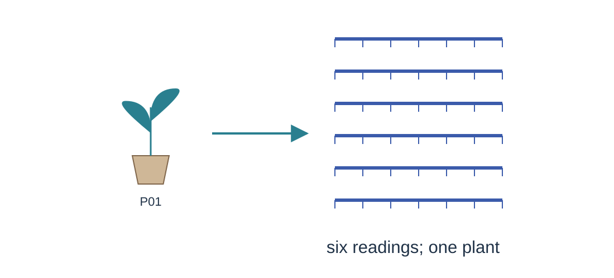
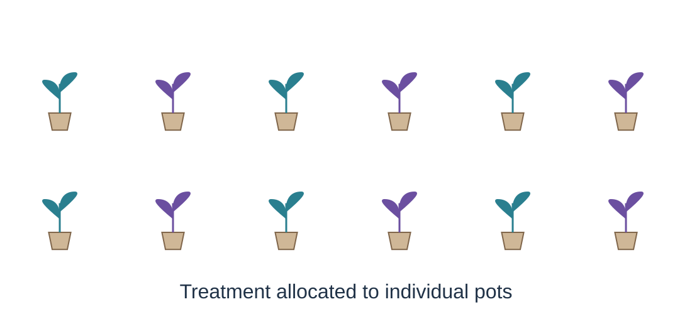
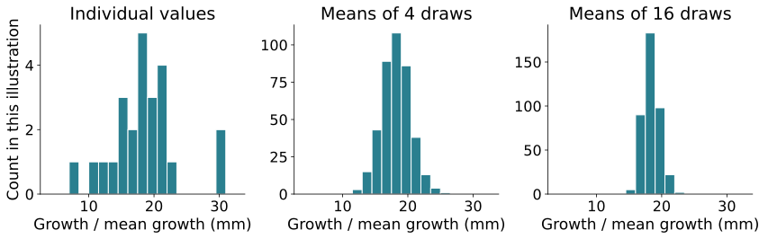
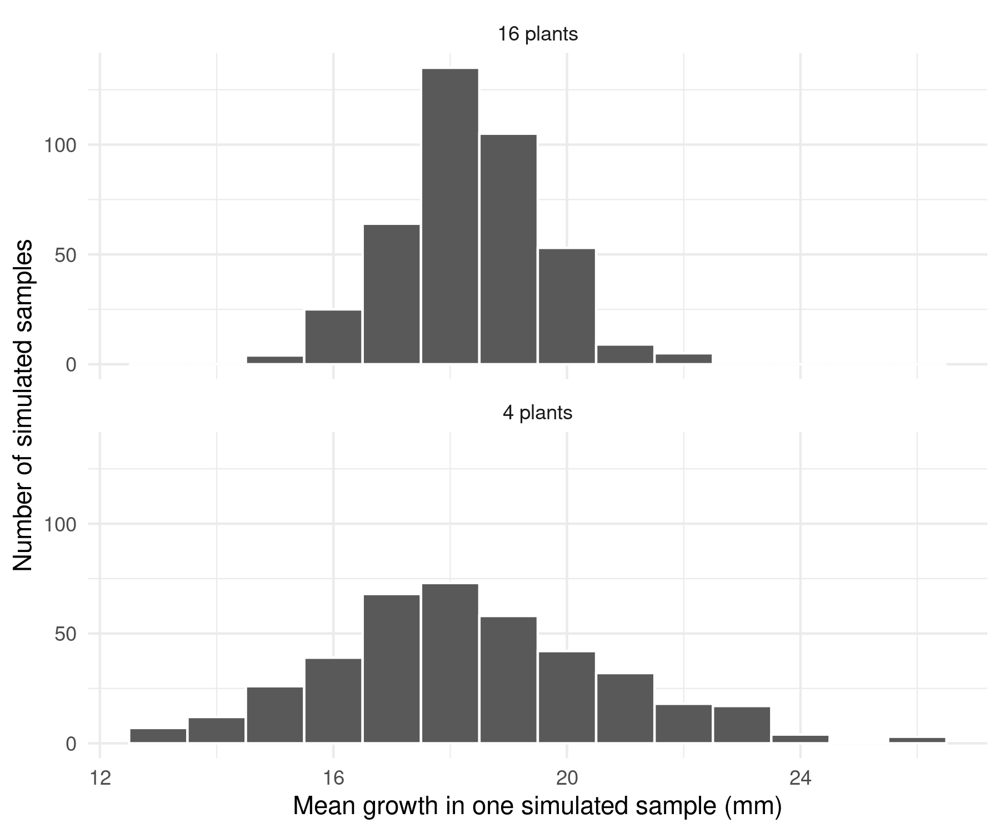
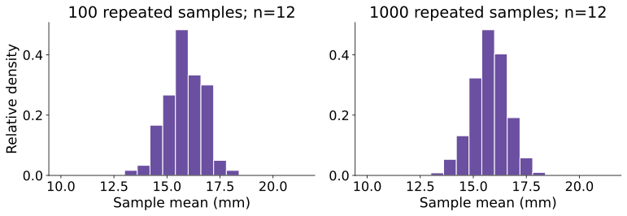
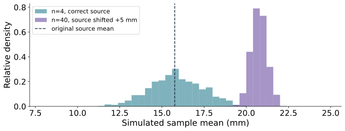
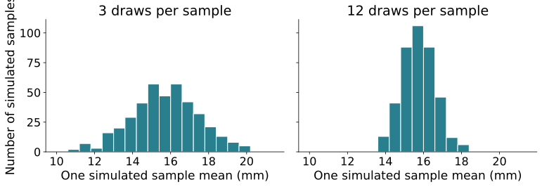

What counts as independent evidence?
Day 14 — Replication and sampling uncertainty
About this lecture
A thesis student treats three plants, measures a leaf on each plant ten times, and writes n = 30 in the methods. The examiner replies: “You have three plants. n = 3.” With n = 30 every later result looks far more certain than the experiment can support. Which measurements count as independent evidence, and how precisely does a mean describe the population?
- The experimental unit is the thing that independently received the treatment: here, a plant in its own pot.
- Technical replicates (re-measuring the same plant) check the measurement; biological replicates (more plants) tell us about plants.
- The SD describes how plants vary; a sampling distribution shows how much a mean would vary between repeated samples.
- A precise estimate can still be wrong if the sampling or measurement is biased.
This is a reasoning day, supported by a short supplied simulation. Days 16–18 rely on counting independent units correctly.
The problem: more rows, not more plants
- Six ruler readings of P01 are six numbers about one plant.
- They tell you how repeatable the measurement is (technical replicates).
- They tell you nothing about how other plants respond. For that you need more plants (biological replicates).
- Same trap: 100 cells from one mouse, ten time points from one culture, one product batch weighed twelve times.

The experimental unit: what was treated independently?
- In our study, each plant has its own pot and was randomly allocated to control or treated.
- Ask: could this plant get control while its neighbour gets treatment? If yes, it is a separate unit.
- So the seedling study has 24 units, 12 per group, even though each plant was measured twice (initial and final).
- Initial and final lengths become one growth value per plant.

When the tray is the unit
Suppose instead the treatment was given to whole trays: one tray of control plants, one tray of treated plants.
- Many plants per tray, but only one treatment decision per group.
- Any tray effect (warmer spot, more light) is mixed up with the treatment.
- Counting 24 independent plants would overstate the evidence. No statistical test can repair this; only more trays can.

Count the independent units
| Design | Measurements | Independent units |
|---|---|---|
| 24 plants in separate pots, randomly allocated | 24 growth values | 24 plants (12 per group) |
| 1 plant per treatment, measured 12 times each | 24 readings | 1 plant per group |
| 2 trays of 12 plants, treatment given per tray | 24 growth values | 1 tray per group |
| 1 synthesis run, product weighed 12 times | 12 masses | 1 run |
- The independent units decide what the data can say about other plants or runs.
- Write it as: “We have many measurements, but our number of independently treated units is ….”
Two kinds of spread
- SD among plants: how much individual plants differ. It does not shrink with more plants; plants are as variable as they are.
- Sampling uncertainty: how much the mean would change if we took a new sample of plants. This does shrink with more independent plants.
- Read the horizontal axis: individual values, or means?

A simulation: draw many samples, compute many means
seedlings <- read_csv("data/seedlings.csv", show_col_types = FALSE) |>
mutate(growth_mm = final_mm - initial_mm)
population_mm <- seedlings$growth_mm # 24 values used as a toy population
set.seed(14) # makes the random draws repeatable
means_4 <- replicate(400, mean(sample(population_mm, size = 4, replace = TRUE)))
means_16 <- replicate(400, mean(sample(population_mm, size = 16, replace = TRUE)))
sd(population_mm); sd(means_4); sd(means_16) # 5.13 2.44 1.24sample(..., size = 4, replace = TRUE)draws 4 values; a value may be drawn twice.replicate(400, ...): repeat “draw a sample, take its mean” 400 times.- The result is 400 means, not 400 new plants. The 24 recorded plants never change.
Larger samples give more stable means
- Each bar counts simulated sample means.
- Means of 4 plants: SD 2.44 mm. Means of 16 plants: SD 1.24 mm.
- Four times as many plants → the spread of means roughly halves.
- The plants themselves still vary with SD 5.13 mm. More plants make the mean more stable, not the plants more alike.

Simulation settings are not sample size
Three settings, three meanings:
- Draw size (
size = 12): plants in each simulated sample. Changes how much the means vary. - Repetitions (100 vs 1000): how many means we look at. Gives a smoother picture, same width.
- Seed: which random sequence. Exact values change; the pattern does not.
None of them adds a measured plant.

Precise is not the same as correct
- If every measurement is 5 mm too high (a misread ruler, one unusually sunny tray), means of 40 plants are tightly clustered, in the wrong place.
- More readings or more plants from the same biased source make the estimate narrower, not truer.
- Another ruler reading fixes measurement noise; another independent, representative unit addresses the biology.

Same idea, new source: the second class
transfer <- read_csv("data/seedlings-transfer.csv",
show_col_types = FALSE) |>
mutate(growth_mm = final_mm - initial_mm)
set.seed(14)
means_3 <- replicate(400, mean(sample(
transfer$growth_mm, size = 3, replace = TRUE)))
means_12 <- replicate(400, mean(sample(
transfer$growth_mm, size = 12, replace = TRUE)))
sd(means_3); sd(means_12) # 1.69 0.83- 18 recorded plants (SD 3.08 mm) as a toy source.
- Means of 3 draws vary about twice as much as means of 12.

Summary
| Concept | Key fact |
|---|---|
| Experimental unit | What independently received the treatment; seedling study: 24 potted plants |
| Technical replicate | Re-measuring the same material; checks the measurement, not the biology |
| Biological replicate | Another independent unit; informs how plants (or runs) respond |
| Shared trays | Treatment per tray → the tray is the unit; a test cannot repair the design |
| SD among plants | Spread of individuals (5.13 mm); does not shrink with more plants |
| Sampling uncertainty | Spread of means: 2.44 mm (n = 4) vs 1.24 mm (n = 16) |
| Simulation settings | Draw size changes precision; repetitions and seed do not add plants |
| Precision vs bias | A narrow distribution can sit in the wrong place |
Next (Day 15, descriptive report): put the checked data, summaries, figure and an honest statement of the units and limits into one report that renders from scratch.
Now: open the Day 14 exercises. Leave with day14-sampling.R, your replicate diagrams and a short explanation of what was repeated and what increased the independent information.